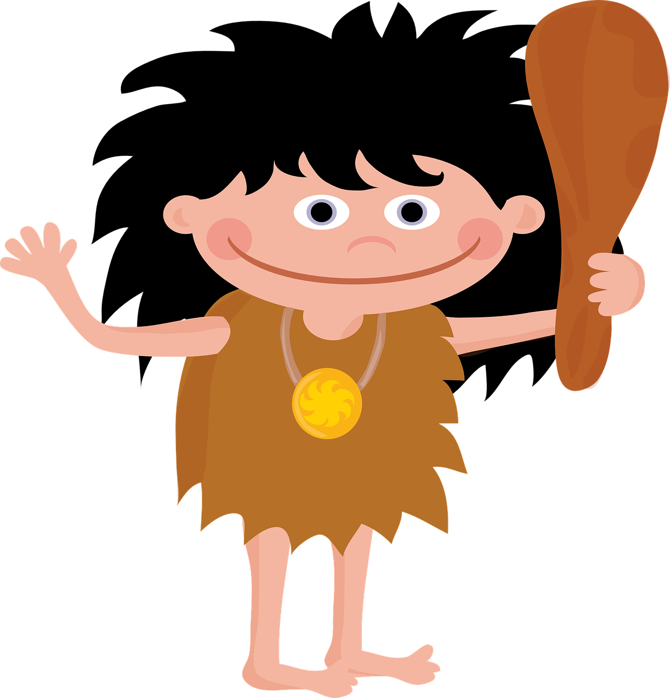

Recursos empleados en la unidad didáctica ( por orden de aparición):
1. Rocky: Banco de imágenes libres/ Pixabay/ Prehistoria

2. Bloc notas: Banco de imágenes libres/ Pixabay/ Periodista

3. Micrófono: Banco de imágenes libres/ Shutterstock/ Periodismo

4. Portada pasaporte: Recurso propio

5. Pasaporte prehistórico: Recurso propio

6. Cuento El hombre del fuego: Buscador Google/Cuentos sobre la prehistoria/ Cuentos cortos/ El hombre del fuego
http://www.cuentoscortos.com/cuentos-originales/el-hombre-del-fuego
7. Libro: Buscador Google/ Herramientas/ Derechos de uso/ Etiquetadas para la reutilización/ Libro imagen

8. Video sobre el fuego: Video Youtube/ Opción creative Commons (CC)
9. Video resumen prehistoria: Recurso propio compartido en Youtube
10. Familia Rocky: Banco de imágenes libres/ Pixabay/ Prehistoria